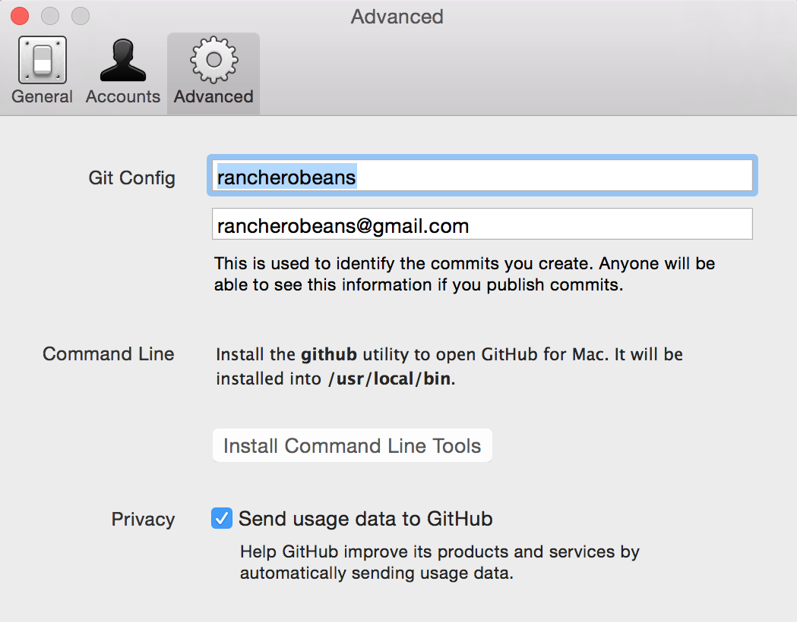

forkable notes on git
No, that's not a typo - if you're new to Git/GitHub and you want to learn about it in simple terms, your goal should be to read and then modify this site yourself by 'forking this project'.
First off, I'm also new to this, so by no means is gitdown.co the best guide around. My simple hope is that some like minded people can go through it and contribute to making it better so we all learn.
Challenge accepted? Ok, so Git is a Distributed Version Control System developed by Linus Torvalds. In a sentance, Git allows multiple people to contribute to a single codebase in order to make something, like this website. Github is a web based hosting service for Git file repositories with contol over who can access them, or not, and a whole bunch of collaboration features thrown in. With Git and GitHub, you can work with others to make great software. Ok, blah blah, let's get to it.
Start using the Terminal and something strange happens - you begin to love it (someone please fork this site and add some Windows instructions!). It's bizarre but strangely satisfying and I still don't know why. It may have something to do with the fact that it's a much more intimate and connected way to use your computer. Try it out:
open the Terminal app: Applications > Utilities > Terminal
go to the home directory: cd ~
look at your folders in the home directory: ls
go to a folder: cd [folder name]
go back up a folder: cd ..
Sign up for an account on GitHub.
Download and install GitHub Desktop GitHub.
Having trouble with Pages? Check out our documentation or contact support and we’ll help you sort it out.